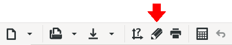
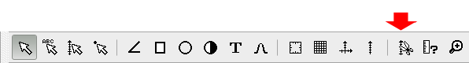
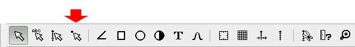
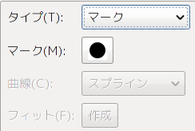
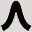

外観
起動画面
Ngraph を起動すると下図のウィンドウが開かれます。

ここでは、簡単にウィンドウの説明をします。
- コントロールボタン(上部)
- 通常のウィンドウアプリケーションと同様に、ファイルのオープン など頻繁に使うメニューコマンドがボタンに割り当てられています。
- コントロールボタン(左サイド)
- マウスによる操作モードを指定するトグルボタン列です。グラフィッ クスオブジェクトの選択モード、レジェンド種類別の作成モード、 プロットされたデータの評価モード、画面の拡大縮小モードなどを 切り替えます。
- サイドバー
-
グラフの右に表示され、上部にデータや軸などを一覧表示する タブ、下部にマウスカーソル位置やフィッティングの情報を表示す る場所があります。タブの順番・位置はドラッグ＆ドロップで自由 に変更できます。
- Data タブ
-
開かれたデータファイルが一覧表示されます。また、プ ロットの為の各種パラメターも一覧表示されます。このリス トをダブルクリックするとデータダイアログボックスが開き、 各種設定を変更する事ができます。
- Axis タブ
-
座標軸の名前と、スケールの数値などの各種パラメター が一覧表示されます。このリストをダブルクリックすると軸 ダイアログボックスが開き、各種設定を変更する事ができま す。
- Merge タブ
-
合成ファイルと各種パラメターが一覧表示されます。こ のリストをダブルクリックすると合成ダイアログボックスが 開き、各種設定を変更する事ができます。
- Parameter タブ
-
parameter オブジェクト作成・設定や、値の変更などを 行います。
- Path, Rectangle, Arc, Mark, Text タブ
-
各レジェンドを一覧表示します。このリストをダブルク リックすると各レジェンドのダイアログボックスが開き、各 種設定を変更する事ができます。
- Coordinate 表示
-
グラフのマウスカーソルの位置が表示されます。 また、座標軸が有る場合にはマウスカーソルの位置に対応す る軸の座標も表示されます。
- Information 表示
-
フィットの結果等が表示されます。
グラフ作成の概略
データファイルを用意する
Ngraphはデータファイルからデータを読み込みグラフを作成します。 従って、まずデータファイルを用意しなければなりません。 エディター、計算プログラム、あるいは測定装置コントロールソフトなどからデータファイルを作成します。
グラフの種類を決める
グラフにするデータファイルを用意したらNgraphを起動します。次に作成 したいグラフの種類を決めます。 Ngraphでは以下の3つに分類されています。
フレームグラフ(Frame graph)
4つの軸で囲まれたグラフ方眼グラフ(Section graph)
4つの軸で囲まれ、方眼線の入ったグラフ交差グラフ(Cross graph)
X-Y２軸のグラフ初期状態ではフレームグラフが一つ作成されています。 フレームグラフの４つの軸のスケールはまだ設定されていませんので、軸の基線を示す枠だけが表示されています。 これで良ければ次に進みます。 他の種類のグラフを作成するには、[グラフ]-[新規作成]([Graph]-[New graph])メニューで作成するグラフの種類を指定します。
データファイルを開く
次に、準備してあるデータファイルを開きます。 データファイルを開くには様々な方法が有りますが、 取り敢えず[データ]-[追加]メニューを選び、 ファイル選択のダイアログボックスでデータファイルを開いてください。
データファイルを開く方法は他にも用意されています。
- 下図のコントロールボタンを押す。

- Data タブ上でマウス右ボタンを押してポップアップメニューを出し、"追加(A)" メニューを選ぶ。
- ファイルマネージャー等からデータファイルを選び、グラフまたは Data タブ上にドラッグ&ドロップする。
いずれの方法でも、 データファイルを指定すると次いでプロット方法などを指定するデータダイアログボックスが開きますが、 取り敢えず OK で閉じてください。
- 下図のコントロールボタンを押す。
描画する
グラフを再描画するには下図のボタンを押してください（再描画が必要な場合はアイコンが変化し注意を促します）。

描画する方法は他にも用意されています。
- [表示]-[描画]([View]-[Draw])メニューを選択する。
- グラフ上でクリックしてスペースキーを押す。
この様にして描画すると軸のスケールは少し余白をとるように自動的に設定され、グラフが描画されます。
軸のスケール
スケールを変える
特にスケール (座標軸の上限・下限)を設定せずに描画した場合にはオートスケールで値が決められます。 また Axis タブには軸が一覧表示されています。 フレームグラフの場合には軸は４つあり、それぞれ "fX1", "fY1", "fU1", "fR1" と名前が付いています。 これらの軸のスケールを変更するには、下図の様に Axis タブの一覧から変更したい軸を選んでダブルクリックしてください。
軸ダイアログボックスを開く方法は他にも用意されています。
- [軸]-[設定] ([Axis]-[Update]) メニューでプ変更したい軸を選ぶ。
- 下図ボタンのいずれか一方
(どちらでも良いです)を押してグラフィックスオブジェクト選択モード
(あるいは軸のみの選択モード)にしてグラフ上で軸をダブルクリックし、
次いで出てくるダイアログボックスで変更したい軸のボタンを押す。
この様にすると下図の軸ダイアログボックスが開かれます。 ここで、「最小値」「最大値」「増分」に軸のスケールの最小，最大，増分を指定してください。 目盛数字は増分に対して付けられます。 「分割数」は「増分」をさらに何等分して目盛線を引くかを決めます。 この値が0の時は自動的に分割数が決められます。 「スケール法」では通常の線形軸（linear）、ログ(log）、逆数(inverse)、MJD の中から１つを選ぶ事ができます。 「ファイル」ボタンを押すとスケールを開いたデータファイル中から指定したファイルでオートスケールを行って決める事ができます。 「クリア」はスケールの設定を未設定状態にします。
さらに軸に関する細かい設定ができるように「軸基線」「目盛線」「目盛数字」「フォント」「位置」のボタンが用意されています。 「軸基線」ボタンを押して軸の基線の太さ、色などの設定を行います。 軸の端に矢印をつけたりすることもできます。 「目盛線」ボタンを押して軸の"ゲージ"の長さ、太さ、色などの設定を行います。 また、目盛線をグラフの内側に描くか外側に描くかを決めたり(「位置」)、軸を全部描かずに一部だけにしたり(「範囲最小値」、「範囲最大値」)できます。 「目盛数字」ボタンを押して、その"ゲージ" に振る目盛数字に関する設定を行います。 目盛数字を振り始めるスケールの位置を変えたり（「開始点」、0で自動設定)、 間隔を変えたり(「間隔」、0で自動設定)、 個数を変えたり(「個数」、-1で自動設定)できます。 「フォント」ボタンを押して目盛数字のフォントの設定を行います。
スケールをクリアする
前節で説明したように、軸ダイアログボックスの「クリア」ボタンで、 軸のスケール設定を未設定状態にできますが、 複数の軸をクリアしたいような場合には[軸]-[スケールクリア]メニューでクリアしたい軸を複数指定し、一括してクリアする事ができます。 あるいは下図ボタンを押しても同じように複数の軸をクリアできます。

一部を拡大する
前節のように軸のスケールは数値を入力して変更しますが、グラフの一部を拡大して描画したい時などはグラフィカルに変更する事もできます。 それには下図ボタンを押してトリミングモードにしてグラフ上で軸の範囲をマウスで指定します。

スケールの値を元に戻す
軸のスケールの設定は、各軸10個まで履歴が記憶されています。 従って前節のように一部を拡大描画した後に、元のスケールの設定に簡単に戻す事ができます。 それには下図ボタンを押して設定を戻したい軸を指定してください。

プロット方法
プロット方法を変える
デフォルトの状態では、黒い点でデータ点がプロットされます。また、Data タブには開いたデータファイルが一覧表示されています。 プロット方法を変える為に、Data タブの一覧表示をダブルクリックしてデータダイアログボックスを開いてください。
データダイアログボックスはその他に次の方法で開くことができます。
- [データ]-[設定] ([Data]-[Update]) メニューでプロットしたいデータファイルを選ぶ
- 下図ボタンを押してデータ選択モードにしてグラフ上でデータをクリックする

- Data タブ上でマウス右ボタンを押してポップアップメニューを出し、"プロパティ(P)" メニューを選ぶ
この様にすると下左図に示すデータダイアログボックスが現れます。
例えばプロット方法を変更してデータを曲線で結ぶようにするには上右図にの様にプロットタイプを "曲線" にします。 その後、データダイアログボックスを OK で閉じ、もう一度描画してくだ さい。
データダイアログボックスでは、その他にドットの大きさ、幅、色などの設定が行えます。 またデータファイルの先頭に何のデータであるかの注釈をつけておく事が多いと思いますが、 その部分を読み飛ばすのには「読込」ボタンを押して「先頭スキップ行」を設定します。
曲線+点でプロットする
データを曲線と点の両方でプロットするようにするには、 同じデータファイルを二度開き、片方を曲線で、もう片方を点でプロットするように設定します。 同じデータ2度開くのも基本的には前節で示した方法で、 二回開けば良いのですが、すでに開いて有るファイルをもう一度開くには下図に示したように Data タブ上でマウス右ボタンを押してポップアップメニューを出し "複製(D)" メニューを選び複製を生成するのがより簡単です。 Data タブでINSキーを押す事でも同様の操作が行えます。 下左図は Data タブでポップアップメニューを出した状態です。 "複製(D)"メニューを選ぶ事で下右図のように Data タブには同じファイルが2つリストされるようになります。
このようにして2度開いたファイルのプロットの設定を、 片方のプロットを "マーク" に、もう片方を "曲線" にする事で、 データは曲線と点の両方でプロットされるようになります。
 データ点の評価・マスク・移動
プロットしたデータの値はグラフの座標値から読み取る時に、 グラフ上でマウス右ボタンを押してポップアップメニューを出し、 "クロスゲージ(G)" を選ぶと、マウスカーソルに縦横のクロスゲージが現れますので、座標値を読み取るのに便利です。 また、もっと直接的に数値を知りたいときには、 下図のコントロールボタンを押して「評価モード」にしてからグラフ上でデータをクリックします。
するとマウスポインターに近いデータの一覧がリストアップされます。
ここでリストアップされた項目の「#」はデータファイルの番号、 「行」はそのファイル中の行数、「Ｘ、Ｙ」が座標値を示してします。 リストボックスの中の項目を選択し「Mask」ボタンを押す事で、データの一部だけを描かなくすることができます。 また、「Move」ボタンを押すと、データを移動させる事もできます。 これらマスク、移動の解除はデータダイアログボックスの「マスク」「移動」で行います。
グラフを飾りづける
Legend を入れる
図にテキスト、矢印などを入れるには、 下図のコントロールボタンを押してLegend の種類を選び、マウスで位置を決めます。 Legend の作成が終わるとマウスは選択モードに戻ります。 複数の Legend を作成したいときは SHIFT キーを押しながらコントロールボタンをクリックしてください。 また Legend の位置指定時に CTL キーを押しながらマウスを操作すると、角度や縦横の比を制限できます。


直線・曲線を作成します。 
矩形を作成します。 
円・楕円を作成します。 
データプロット形式 "マーク" に対応するマークを作成します。 
テキストを作成します。  ガウス関数, ローレンツ関数, 放物線, 正弦曲線を作成します。
作成した曲線はただちにレジェンド-曲線に展開されるので, 一度作成すると関数としての変更はできません。文字列をグラフ上にドラッグ&ドロップすることでもテキストを作成できます。
グラフ上での移動、設定変更
マウスによって Legend、Axis などの設定の変更、移動、拡大縮小などを行う事もできます。 Ngraph には、その為のマウスポインターのモードが４種類あるので注意が必要です(下図)。

ここで、"legend+axis" のポインターモードでは、レジェンドと軸を選択する事ができます。 "legend" のポインターモードではレジェンドのみが選択対象になります。 軸とレジェンドが込み合っていて軸を選択したく無いような場合に使ってください。 "axis" のポインターモードでは逆に軸のみが選択対象になります。 "data" のポインターモードではプロットしたデータが選択対象になり、プロットした点に対応するデータファイルの設定を行う事ができます。
選択したいグラフィックスオブジェクトに合ったコントロールボタンを押してモードを決め、 マウスで目的のグラフィックスをクリックするとフォーカスされている事を示す点線枠が表示されます(下図)。 SHIFT キーを押しながらクリックすると複数のオブジェクトを複数選択できます。
マウスのドラッグで移動、拡大・縮小ができます。 移動の際に CTL キーを押しながらドラッグすると、水平垂直方向にしか動きませんので、位置合わせをするのに便利です。 また、移動の際はグリッドが効いています。このグリッドを解除するには SHIFT キーを押しながらドラッグしてください。 ダブルクリックでダイアログボックスが開き各種設定の変更が行えます。
また、レジェンドや軸を選択すると コントロールボタン(上部) が上のような表示になります（表示されるボタンなどは選択し たオブジェクトによって変わります）。ここで値を編集するこ とにより、選択したオブジェクトの設定をまとめて変更できま す。
レジェンドの複製
同じ様なレジェンドを沢山作成しなければならない時の為に、１つ作成してそれの複製を生成する機能があります。 それには前節で説明した方法で、複製を作成したいレジェンドがフォーカス(選択)された状態(点線枠で囲まれた状態)にします。 もし、複数のレジェンドの複製を作りたいのであれば、それら複数のレジェンドをマウスで囲むようにしてフォーカスされた状態にしてください。 ここで INS キーを押すと(あるいはポップアップメニューを出して "複製(D)" メニューを選択する)、 フォーカスされているレジェンドの複製が生成されます。 複製は同じ位置に生成されますので、重なって１つしか見えません。 ですが、複製後は複製されたレジェンドのみがフォーカスされていますので、そのままドラッグすれば複製されたものだけが移動します。
legend.nsc を使う
Ngraph にはアドインと呼ばれる副プログラムを使う機能が用意されています。 その一つにデータの凡例を自動生成する LGEND が用意されています。 [アドイン] ([Addin]) メニューの中から [Legend...] を選び実行すると、現在開かれているデータファイルの凡例が自動生成されます。 下図は LEGEND アドインによる凡例の作成例です。

込み合っているレジェンドの選択方法
"Path タブ"、"Rectangle タブ"、"Arc タブ"、"Mark タブ"、"Text タブ" には それぞれのオブジェクトの一覧が表示されています。 "File タブ" や"Axis タブ" と同様に一覧をダブルクリックするとダイアログボックスが開き、 各種設定を行う事ができます。 また、一覧の中から適当な legendを選びスペースを押す (あるいはポップアップメニューを出して "フォーカス(F)" メニューを選ぶ)と、 グラフで対応するグラフィックスオブジェクトがフォーカスされます。 作成したlegendが重なりあってしまい、目的の legend だけをマウスで選択するのが困難な時にこの機能を使うと便利です。
グラフの印刷・保存・読込、ファイルへの出力
グラフの印刷
印刷は[グラフ]-[印刷]メニューで行います。
グラフの保存
グラフの保存は[グラフ]-[保存]メニューで行います。 このメニューを選択すると保存するファイル名を聞いてきた後、各種セーブオプション指定の為のダイアログボックスが開きます。 ここで OK を押せば、Ngraph の保存形式で NGP の拡張子を持つファイルが作成されます。 一方、Ngraphは予め用意してあるデータファイルを読み込んでグラフにしています。 従って、グラフを完全に保存するにはグラフの状態を保存した NGP ファイルだけでなく、データファイルも保存しておく必要がある事になります。 ところが、このように NGP ファイルとデータファイルを別々に保存しておくと、 フォルダ構成の異なるコンピュータにコピーした時に正常にデータファイルが読み込めなくなってしまいます。 これを回避する為に幾つかのセーブオプションが用意されています。
- パス情報
- セーブする時にデータファイルのパス情報をどうするかを指定します。 unchange では何の変更もしません。 full にするとデータパスをフルパスでセーブします。 relative はカレントフォルダからの相対パスでセーブします。 base はパス名をつけずファイル名だけでセーブします。
- データファイルを含める
- このオプションをチェックすると、データファイルの内容も NGP ファイルに埋め込まれます。 したがって、グラフの保存にデータファイルはもはや不要となります。 埋め込まれたデータファイルはNGPファイルの読み込み時に展開されます。
- 合成タファイルを含める
- 上記同様に合成ファイル(GRAファイル)をNGPファイルに埋め込みます。
グラフの読込
セーブしてあるNGPファイル(*.ngp)を読み込むには[グラフ]-[開く]メニューで行います。 ファイルマネージャー等からNGPファイルを選び、 グラフ上にドラッグ&ドロップしてもグラフを読み込むことができます。 このメニューを選択すると読み込むファイル名を聞いてきた後、 各種読み込みオプション指定の為のダイアログボックスが開きます。 各オプションの意味は以下の通りです。
- データファイル展開
- データファイルが埋め込まれている NGP ファイルを読みこむとき、埋め込まれているデータファイルを展開するかどうかを指定します。 展開するフォルダは「展開ファルダ」で指定できます。デフォルトではカレントフォルダ(.\)になっています。
- パス情報
- データファイルのパス情報の扱いを選択します。 「フルパス」はフルパスで指定されていないデータファイルについて、 カレントフォルダから推測されるフルパスに変換します。 「ファイル名のみ」の場合、パス情報は無視され、 データファイルはカレントフォルダにあるものとみなされます。 フォルダ構成が変わってしまい、かつデータファイルがカレントフォルダに有る場合にはこのオプションをチェックしてください。
画像ファイルへのエクスポート
[グラフ]-[画像にエクスポート]で出力ファイル形式を指定してファイルに出力する事ができます。
GRAファイルへの出力
GRAファイルとは、直線、円などのグラフィックス命令を記述したNgraph独自のファイル形式です。 グラフの合成に使う事ができます。 GRAファイルの作成は[グラフ]-[画像にエクスポート]-[GRA ファイル]で行います。 そのようにして出力したGRAファイルを[合成]-[開く]メニューで指定するか、 ファイルマネージャー等からGRAファイルを選び、 グラフまたはMerge タブ上にドラッグ&ドロップ事で取り込む事ができます。
フィッティング
通常のフィット
データのフィッティングをするには下図の様にデータダイアログボックスでプロット形式を fit にします。

その後、「作成」ボタンを押すと下図のフィットダイアログボックスが開きますので、そこでフィッティングの方法を指定します。
フィットダイアログボックスの「種類」には "多項式", "べき関数", "指数関数", "対数" から選択します。 "ユーザ定義" を選ぶとユーザ指定の関数でフィットできますが、それは次節で説明します。 また "多項式" (多項式フィット)の場合には「多項式次元」も指定してください。 その後、描画するとフィッティングが行われます。 フィット結果は線としてグラフに表示されます。またサイドバー右下にも情報が表示されます。 あるいはフィットダイアログボックスの「結果表示」ボタンでもフィット結果が数値で表示されます。
フィット結果の表示で<DY^2>はデータが (Xi, Yi)、フィットした関数が Y=f(X) のとき、 <DY^2>=<ΔY^2>=<[Yi-f(Xi)]^2>=(1/N)Σ[Yi-f(Xi)]^2 の意味です。また "|r| or |R|" は相関係数の絶対値です。
任意関数によるフィット
任意関数でフィットする場合には、フィットダイアログボックスの「種類」で "ユーザ定義" を選びます。 フィット関数を「フィット式」に指定します。
例として
Y=a*(X+b)^2のフィットの場合を説明します。 フィッティングパラメターは a と b です。 フィッティングパラメターは「フィット式」の中では %00 から %09 で指定します。 つまりフィッテングパラメターは最大 10 個までに制限されています。 上の例では「フィット式」に%00*(X+%01)^2と入力してください． 任意関数のフィットでは一気にパラメターの値を決めるのではなく、パラメターの値を変えながら誤差が最小になる点を探して行きます。 探し方はパラメターの初期値を決め、その時のパラメター空間での誤差の勾配から新たなパラメターの値を決めると言う動作を パラメターの値が変わらなくなるまで(収束するまで)繰り返します。 「%00:〜%09:」「収束(%)」「微分式指定」「dF/d(%00):〜dF/d(%09):」でこの繰り返し動作を制御します。 パラメター空間での誤差の勾配を求めるにはフィット関数を各パラメターで偏微分した式が必要です。 「微分式指定」をチェックし、これら微分式を「dF/d(%00):〜dF/d(%09):」に入力してください。 上の例の場合 %00*(X+%01)^2 を %00, %01 で偏微分した式を入力します。 具体的にはdF/d(%00): (X+%01)^2 dF/d(%01): %00*2*(X+%01)としてください。 「微分式指定」をチェックしなければ、微分式の近似値を数値的に求めますが、明示的に微分式を指定した方が収束は速くなります。 また、フィットパラメターの初期値を「%00:〜%09:」で指定してください。 パラメターの値が変わらなくなった時を収束したと判断していますが、全く変化しなくなる事はありません。 変化しなくなったと見なす基準を「収束(%):」で指定します。 デフォルトでは 1% ですのでフィット結果の有効桁数は２桁です。 これらのオプションを指定したら、ダイアログボックスを閉じて描画すればフィットが行われます。 また、時としてsingular matrix あるいは too small number of dataのエラーが出たり、収束せずにフィット処理がいつまでも続いてしまう事 があります(描画進行状況を示すダイアログの「停止」ボタンを押して中断してください)。 このような場合にはフィットパラメターの初期値を変えて再度挑戦してみてください。 フィット関数によっては初期値をかなり慎重に選ばないと収束してくれま せん。なおフィッティングのユーザ定義関数では下記の定数、関数は使用できません。
- F(), G(), H()
- CIOLOR(), ALPHA()
- OBJ_COLOR(), OBJ_ALPHA()
- RGB(), RGB2()
- HSB(), HSB2()
- MARKSIZE(), MARKTYPE()
- NUM
- MINX, MAXX
- MINY, MAXY
- SUMX, SUMY
- SUMXX, SUMYY, SUMXY
- AVX, AVY
- SGX, SGY
- FIRST
- MASK, MOVE
- COLX, COLY
- AXISX, AXISY
- HSKIP, RSTEP, FLINE
- FILE_OBJ, PATH_OBJ, RECT_OBJ, ARC_OBJ, MARK_OBJ, TEXT_OBJ
- %D, %N
数式変換機能を使う
データを数式で変換してプロットする
Ngraph ではデータファイルのデータをそのままグラフにするだけではなく、データを指定した数式で変換してからグラフにする機能を持っています。 変換する為の式はデータダイアログボックスで「変換数式」タブを表示し、「変換数式:」に入力します。 変換数式は各データファイルで独立しています。 下図のボタンを押して、複数のデータファイルの変換数式を一括して入力する事もできます。

例えば、縦軸データを二乗したものをグラフにしたい時には「(Y)カラム数式変換」に
Y^2 (あるいは同じ事ですが SQR(Y))と入力してください。もしデータダイアログボックスの「(Y)カラム」が 2 となっている場合には%2^2 (あるいは同じ事ですが SQR(%2))でも同じ結果を得ることができます。%2 の意味は "データファイルの2カラム目のデータ"です。 このように %1〜%999 で特定のカラムを取り出す事ができます。 一方、Xはデータダイアログボックスの「(X)カラム」に指定したカラムのデータであり、 Yはデータダイアログボックスの「(Y)カラム」に指定したカラムのデータです。 ですから、「(Y)カラム」を 3 にすると、今度は "Y" と "%3" が同じ値を示すようになります。 また配列 COL を使って特定のカラムを取り出すこともできます。 COL[1] が1カラム目のデータになります。縦軸データをカラム 1 とカラム2 の和をプロットしたい時には変換数式に
%1+%2と入力してください。このようにカラム間の演算ができます。 また、0番目(Data タブのリストの先頭の数字)のデータのカラム 1 と、1 番目のデータのカラム2 の和をプロットしたい時には変換数式に%F0001+%F0102と入力してください。このようにファイル間の演算もできます。数式変換では四則演算、括弧のほか多くの関数が使用できます。
複数のグラフ
複数のグラフの作り方
- グラフを新たに作成する
一枚の紙に複数のグラフを作成したい場合には、 [軸]-[追加作成]メニューの中から作成したいグラフの種類を指定します。 あるいは下図のコントロールボタン
を押して、グラフ(軸)の作成モードにして グラフ上でマウスを使って位置を指定し作成する事もできます。 - すでに作成してあるグラフを複製する
既に一つのグラフが作成してあり、それと同じ様なグラフを新たに追加するのには、 その既に作成してあるグラフを複製してしまうのが、より簡単で現実的です。 それには、下図ボタンを押してマウスをポインター(選択)モードにします。 このモードでは軸とレジェンドが選択対象になります(legendも一緒に複製する事を考えています)。
次いで、グラフ上で複製ーしたいグラフ全体を囲むようにマウスで範囲を指定します。 すると、マウスの範囲に入っているグラフとレジェンドが全て選択され、点線枠で囲まれます。 この状態で INS キーを押す(あるいはポップアップメニューを出して "複製(D)" メニューを選択する)と、 選択されているグラフとレジェンドが複製されます。 この時、フォーカス(選択)されているのは新たに複製されたグラフとレジェンドだけで、複製元は選択されていません。 この状態でマウスでドラッグして位置をずらしてください。 通常、複数のグラフを作成する場合には縦、あるいは横に位置を揃えたい場合が多いですが、 マウスで位置をずらす時に CTRL キーを押しながらドラッグすれば水平・垂直方向にしか移動しませんので、簡単に揃える事ができます。
- グラフを新たに作成する
append.nscを使う
NGP ファイルとして保存されている別のグラフを、現在のグラフと同じページに取り込むのはもっと簡単です。 Ngraph にはアドインと呼ばれる副プログラムを使う機能が用意されています。 その一つにNGPファイルに保存されているグラフを現在のグラフに追加する APPEND が用意されています。 [アドイン] ([Addin]) メニューの中から [Append...] を選び実行しNGPファイル名を指定するだけで、現在のグラフに追加する事ができます。
軸の名称
フレームグラフや方眼グラフは4つの軸(X軸、Y軸、U軸、R軸)から構成されます。 また交差グラフは2つの軸(X軸、Y軸)から構成されます。 これらの軸には複数のグラフを作成しても一意になるように名前が自動的に付けられます。 軸の名前は以下の形式をしています。
グラフの種類 軸 グラフの番号 f: フレームグラフ
s: 方眼グラフ
c: 交差グラフX
Y
U
Rグラフの種類毎に 1 から振られます 例えば、最初に作成したフレームグラフの軸の名前は fX1, fY1, fU1, fR1 となり、二番目作成したフレームグラフの軸の名前は fX2, fY2, fU2, fR2 です。
Axis タブの "name" の部分には、この名前が一覧表示されます。 またこれとは別に他のグラフィックオブジェクトと同様に0からの通し番号が付いています。 Axis タブの "#" の部分に表示されている数字がこの番号です。
プロットする軸の指定
データをプロットする軸はデータダイアログボックスの「軸」に軸の通し番号を指定します。 ただし、分かりやすい様にコンボボックスのリストには前節で説明した軸の名前が一覧表示されるようになっています。
軸の連携
Ngraph の座標軸は軸の間で連携する為の機能を2つもたせてあります。
- Reference パラメタ
-
座標軸の最大・最小値が設定されていない時、Reference パラメタに他の座標軸番号が指定されていれば、 その軸から最大・最小値を自動的に読み取ります。主にフレームグラフの U軸, R軸の為に使われます。
- Adjust パラメタ
-
他の軸番号が指定されている場合には、 その軸とAdjust position で交差するように自分自身を平行移動させます。 主に交差グラフの軸に対して使われます。
これらは「参照軸」、「位置ボタン」-「交差軸」でそれぞれ指定できます。
軸には前で説明した様に、0からの通し番号が付けられています。 さらに、(他のグラフィックオブジェクトと同様に)実行時に一意に決まる番号も付いています(^で始まる数字として指定します)。 Axis タブの最後の"^#" の部分に表示されている数字がこの番号です。 上記「参照軸」や「位置ボタン」-「交差軸」のコンボボックスリストから軸の名前を選んだ場合に実際に入力されるのは、 この「実行時に一意に決まる番号」になります。 「通し番号」で指定してあると、軸が削除されたような場合に番号が変わってしまい、 結果として参照関係が壊れてしまい不便なので、 このように「実行時に一意に決まる番号」で指定するようになっているのです。
複数のグラフで X 軸を共通にしたい場合、 下図の様に Reference パラメタを設定すると fX2 軸のスケールを変えるだけで fU2, fX1, fU1 の軸のスケールを揃える事ができます。